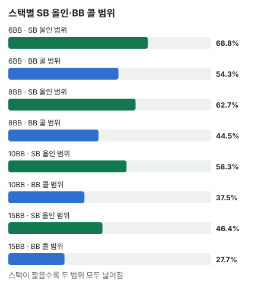

안녕하세요. 토너먼트 후반엔 스택이 짧아지죠. 그때 자주 듣는 말이 "짧으면 올인 아니면 폴드"예요.
오늘은 그 말을 그냥 외우지 말고, 숫자로 따라가 볼게요. 스택이 짧을 때 작게 레이즈하면 무슨 일이 생기는지, 먼저 올인하면 무엇이 달라지는지, 그리고 엔진으로 보면 K♦7♣ 같은 핸드가 왜 올인이 이득인지까지요.
이 글에서 배울 것
- 짧은 스택에서 작게 오픈하면, 상대가 올인하든 콜하든 결국 올인과 비슷한 판이 되는 이유(팟 커밋)
- 먼저 올인하면 상대에게 콜/폴드 숙제를 내는 쪽이 되는 것이 왜 이득인지
- 엔진의 올인 범위 표 읽기, 그리고 K♦7♣의 이득이 어느 판에서 나오는지
1단계. 오늘의 장면과 용어
장면
둘만 남은 테이블이에요. Hero는 SB(스몰 블라인드 자리), 상대는 BB(빅 블라인드 자리). 블라인드는 SB 0.5BB, BB 1BB(금액의 BB는 칩 단위), 앤티는 없어요. 두 사람 모두 8BB.
헤즈업에서는 SB가 버튼을 겸해요. 그래서 프리플랍엔 SB가 먼저 행동하고, 플랍부터는 SB가 나중에 행동해요.
Hero (SB · 8BB)


용어
- 푸시 = 가진 칩을 전부 거는 올인
- 오픈 = 앞에서 아무도 안 걸었을 때 처음 하는 레이즈
- AOF = All-in or Fold, 오픈 없이 올인과 폴드 두 가지만 놓고 고르는 계산
- 칩 기준 = 토너먼트 상금은 빼고 칩 수만 세는 계산(상금을 넣는 ICM은 E10에서 배워요)
2단계. 작게 오픈하면 어떻게 될까?
K♦7♣로 2BB 오픈했는데 상대가 올인
Hero가 K♦7♣로 2BB 오픈했고, 상대가 8BB 올인으로 받았다고 해 볼게요. Hero에게 남은 칩은 8 − 2 = 6BB예요. 필요 에퀴티는 B06에서 배웠죠.
필요 에퀴티 = 6(더 낼 돈) ÷ (4(Hero 2BB + 상대가 맞춘 2BB) + 6(상대가 더 건 돈) + 6(Hero 콜)) = 6 ÷ 16 = 37.5%
그러니까 상대 올인 범위를 상대로 Hero 에퀴티가 37.5%만 넘으면 콜해야 이득이에요. 접으면 낸 2BB를 그냥 잃으니까요.
반쯤 열린 문
오픈은 반쯤 열린 문이에요. 한 발을 들였으니, 상대가 올인하면 37.5%를 넘는 핸드는 끝까지 들어가야 하죠. 이렇게 이미 넣은 칩 때문에 웬만하면 끝까지 가야 하는 상태를 팟 커밋이라고 해요.
먼저 올인하면 무엇이 달라질까
차이는 누가 콜/폴드 숙제를 받느냐예요. Hero가 먼저 8BB 올인하면, 이번엔 상대가 숙제를 받아요.
상대의 필요 에퀴티 = 7(더 낼 돈) ÷ (2(상대 BB 1BB + Hero가 맞춘 1BB) + 7(Hero가 더 건 돈) + 7(상대 콜)) = 7 ÷ 16 = 43.75%
Hero 올인 범위를 상대로 상대 에퀴티가 43.75%를 못 넘으면 상대는 접어야 해요. 그만큼 Hero는 카드를 깔지 않고 이겨요. 이걸 폴드 에퀴티라고 하는데, I18에서 자세히 배워요.
반대로 Hero가 작게 오픈하면, 상대가 올인으로 받아서 숙제를 Hero에게 돌려줄 수 있어요. 이번엔 Hero가 37.5% 앞에서 콜이냐 폴드냐를 골라야 하죠.
3단계. 엔진으로 보는 올인 범위
표 읽기
뚝섬 AOF 차트 엔진(칩 기준, 두 사람이 서로 최선으로 대응한다고 보는 근사)으로 스택만 바꿔 계산했어요. 범위 % = 전체 핸드 조합 중 그 행동을 하는 비율이에요. 이름 그대로 올인과 폴드 두 가지만 비교했어요(오픈은 계산에 넣지 않음).
| 두 사람 스택 | SB 올인 | BB 콜 |
|---|---|---|
| 6BB | 약 68.8% | 약 54.3% |
| 8BB | 약 62.7% | 약 44.5% |
| 10BB | 약 58.3% | 약 37.5% |
| 15BB | 약 46.4% | 약 27.7% |

스택이 짧을수록 더 넓게 올인하는 이유
6BB부터 풀어 볼게요. Hero가 접으면 SB 0.5BB를 잃고 6 − 0.5 = 5.5BB가 남아요. 이 5.5BB를 기준으로 올인 결과를 세면 이래요.
- 상대가 접으면: 7BB가 되어 7 − 5.5 = +1.5BB
- 콜 받고 이기면: +6.5BB
- 콜 받고 지면: −5.5BB
8BB도 같은 틀로 보면, 접으면 8 − 0.5 = 7.5BB, 상대가 접으면 9BB가 되어 9 − 7.5 = +1.5BB, 콜 받고 이기면 +8.5BB, 지면 −7.5BB예요.
상대를 접게 해서 얻는 돈은 둘 다 +1.5BB로 같아요. 반면 콜 받았을 때 이기고 지는 크기는 스택과 함께 커져요. 그러니 스택이 클수록 콜 받은 판의 결과가 손익을 더 크게 좌우하고, 접게 해서 얻는 1.5BB의 비중은 작아져요.
그래서 스택이 짧을수록 "카드가 좀 약해도 블라인드를 훔쳐 오는 돈"의 비중이 커서 더 넓게 올인할 수 있어요. 표의 BB 콜 칸도 보세요. 스택이 클수록 상대는 더 좁게, 더 센 핸드로만 콜해요.
헷갈리기 쉬운 숫자 하나만 짚을게요. 2단계의 43.75%는 상대가 콜하려면 필요한 승률이고, 표의 약 44.5%는 상대가 실제로 콜하는 핸드의 비율이에요. 비슷해 보여도 서로 다른 숫자예요.
4단계. K♦7♣로 따라가기
콜 받은 판만 보면
엔진 기준 K♦7♣의 올인 − 폴드(EV는 B24에서 배웠죠)와, 콜 받은 판만의 평균을 스택별로 보면 이래요. 두 값 모두 접었을 때 남는 스택(6BB면 5.5BB, 8BB면 7.5BB)보다 평균 몇 BB 더 남나를 센 거예요.
| 두 사람 스택 | 상대 콜 범위를 상대로 한 K♦7♣ 승률 | 콜 받은 판 평균 | 올인 − 폴드 |
|---|---|---|---|
| 6BB | 약 47.07% | 약 +0.15BB | 약 +0.77BB |
| 8BB | 약 43.58% | 약 −0.53BB | 약 +0.6BB |
같은 K♦7♣인데, 6BB에서는 콜 받아도 조금 이득이고 8BB에서는 콜 받으면 손해로 바뀌어요.
왜 바뀌었을까: 원인 두 가지
원인을 하나씩 떼어 볼게요.
- 상대 콜 범위가 좁아짐: 8BB에서 상대는 약 44.5%만 콜해요(6BB는 약 54.3%). 콜해 오는 핸드가 더 세지니 K♦7♣ 승률이 약 47.07% → 약 43.58%로 떨어져요
- 걸린 돈이 커짐: 이기면 +8.5BB, 지면 −7.5BB로 둘 다 커져요. 그런데 상대 BB 1BB라는 공짜 돈은 그대로라, 그 비중이 줄어요. 그래서 콜 받은 판의 본전 승률이 6BB 5.5 ÷ 12 = 약 0.458에서 8BB 7.5 ÷ 16 = 약 0.469로 조금 올라가요
만약 승률이 6BB 때 그대로(약 47.07%)라면, 8BB에서 콜 받은 판 평균은 약 +0.03BB로 거의 본전이에요. 반대로 6BB 판에 8BB 때 승률(약 43.58%)을 넣으면 약 −0.27BB예요. 6BB의 +0.15에서 보면, 스택만 바꾸면 0.12쯤 줄고(+0.03), 승률만 바꾸면 0.42쯤 줄어요(−0.27). 둘 다 영향을 주지만, 콜해 오는 상대가 세진 것이 더 큰 원인이에요.
그래도 올인이 이득인 이유
8BB에서도 올인 − 폴드는 +0.6BB예요. 콜 받으면 손해인데 왜 이득일까요? 상대는 콜 범위 약 44.48%의 나머지, 곧 약 55.52%를 접어요. 두 몫으로 나누면 이래요.
접는 판의 몫 = 0.5552 × 1.5 = 약 0.83 콜 받는 판의 몫 = 0.4448 × (−0.527) = 약 −0.23 합 = 0.83 − 0.23 = 0.60
이득은 상대가 접는 판에서 나와요. 두 몫을 나누는 법은 I18에서 제대로 다뤄요.
왜 그럴까: 작은 오픈은 두 갈래 모두 올인과 비슷해져요
갈래 1. 오픈 → 상대 올인
2단계에서 본 길이에요. Hero가 숙제를 돌려받고, 37.5%라는 낮은 기준선 앞에서 콜하거나 2BB를 버려야 해요. 숙제를 낼 차례가 상대에게 넘어간 셈이에요.
갈래 2. 오픈 → 상대 콜
상대가 2BB를 맞춰 콜하면 팟은 4BB, 두 사람 뒤에 남은 칩은 6BB씩이에요. 남은 칩이 팟의 1.5배밖에 안 돼요.
플랍에서 상대가 남은 6BB를 올인하면, Hero의 필요 에퀴티는 6 ÷ (4 + 6 + 6) = 37.5%로 또 같은 숫자예요. 이번엔 보드 세 장이 깔린 뒤라, K♦7♣가 보드에 맞지 않으면 접어 2BB를 잃기 쉽고, 애매하게 맞으면 남은 칩을 걸지 말지 어려운 결정이 남아요.
헤즈업이라 플랍부터 SB가 나중에 행동하는 포지션은 있어요. 하지만 남은 칩이 팟의 1.5배뿐이면 포지션을 살려 여러 번 나눠 걸 공간이 거의 없어요. 결국 플랍 한 번에 올인이 정해지는 판이 돼요.
그래서 올인과 폴드로 단순화해요
어느 갈래든 작은 오픈은 "올인을 두 번에 나눠 하는 것"에 가까워요. 그러면서 프리플랍에 먼저 올인할 기회는 상대에게 주죠. 짧은 스택에서 올인과 폴드 두 가지로 단순화해 보는 이유가 이거예요.
자주 하는 실수
실수 1. 짧은 스택에서 작게 오픈하고 상대 올인에 접기 8BB에서 2BB로 오픈하고, 상대 올인에 "아까워도 접자" 하는 실수예요. 이미 2BB를 냈고 남은 칩은 6BB라, 필요 에퀴티는 37.5%뿐이에요. 상대 올인 범위를 상대로 37.5%를 넘는 핸드라면 콜해야 해요. 대신 오픈 버튼을 누르기 전에 "올인을 받으면 어떻게 할지"를 먼저 정해요. 답이 애매하면 오픈하지 말고, 올인 표로 올인과 폴드 중에 골라요.
실수 2. 콜 받으면 지니까 올인하지 않기 "K♦7♣로 올인했다가 콜 받으면 손해잖아" 하는 생각이에요. 8BB에서 콜 받은 판 평균은 약 −0.53BB로 맞아요. 하지만 상대가 약 55.52% 접어서 전체로는 +0.6BB예요. 대신 올인의 손익은 접는 판과 콜 받는 판을 합쳐서 봐요.
실수 3. 6·8BB에서 올인하던 핸드를 스택이 길어져도 그대로 올인하기 같은 K♦7♣도 올인 − 폴드가 6BB 약 +0.77BB에서 8BB 약 +0.6BB로 줄었어요. 스택이 길어질수록 같은 핸드의 올인 이득은 줄고, 15BB에서는 올인 범위가 약 46.4%까지 좁아져요. 그리고 오늘 엔진은 오픈을 비교하지 않았으니, 스택이 길어 오픈이 의미 있어지는 구간은 이 표로 답할 수 없어요. 대신 이 표는 짧은 스택에서 올인/폴드를 비교한 값으로만 써요.
"6BB·8BB에서도 오픈이 더 나을 수는 없나요?"
좋은 질문이에요. 엔진 사실과 해석을 나눠서 답할게요.
엔진 사실: 오늘 엔진은 올인과 폴드만 비교했어요. 오픈의 EV는 계산하지 않았으니, "오픈이 더 나은 핸드가 있는지"는 이 숫자로 말할 수 없어요.
해석: 왜 그럴까에서 본 두 갈래처럼, 8BB에서 2BB 오픈은 상대가 올인하면 37.5%에 끌려가고, 콜하면 플랍 한 번에 올인이 정해지는 판이 돼요. 그래서 짧은 스택에서는 올인/폴드로 단순화해 보는 것이 출발점이에요. 오픈을 섞는 전략은 더 깊은 계산이 필요한 영역이에요.
숫자가 뒤집히는 지점
기준은 두 가지예요.
- 올인 vs 폴드: 접는 판의 몫(상대가 접는 비율 × 1.5BB)이 콜 받는 판의 손해보다 작아지면, 올인이 폴드보다 나빠져요
- 오픈이 사실상 올인인지: 오픈 후 상대 올인에 필요한 에퀴티가 상대 올인 범위를 상대로 한 Hero 에퀴티보다 낮으면, 상대가 올인할 때 콜해야 해요. 오픈한 순간 올인이 정해진 셈이에요
선생님의 한마디
짧은 스택 자리에 앉으면 카드를 보기 전에 이렇게 해요.
- 블라인드가 오를 때마다 내 스택이 몇 BB인지 먼저 세어 두기
- 오픈 크기가 스택의 몇 분의 1인지 보기(8BB에 2BB면 벌써 4분의 1)
- 들어갈 핸드가 오면 칩을 밀기 전에 올인인지 폴드인지 둘 중 하나를 먼저 고르기
연습 문제
필요 에퀴티는 홀덤학습 에퀴티 계산기의 [콜 수익] 칸에 지금 팟(상대 벳 포함)과 콜 금액을 넣어 확인할 수 있어요. 엔진 범위는 뚝섬 AOF 차트(새틀 프리플랍 차트)에서 그외 게임들 → 테이블 인원 2명 → 포지션 SB → 내 스택·상대 스택 8BB로 넣어, K7o가 SB 올인 칸에 들어가는지 보세요. 화면은 실전 보정(올인 범위를 좁힘)이 들어가 오늘 숫자(약 62.7%)보다 좁게 나올 수 있어요. 9인·빅앤티 기준인 홀덤학습 푸시/폴드 트레이너로도 연습할 수 있어요.
문제 1. 두 사람 스택 8BB. Hero가 오픈을 2BB 대신 3BB로 했는데 상대가 올인했어요. 이번엔 필요 에퀴티가 얼마일까요? 2BB 오픈 때와 비교하면?
정답 보기
남은 칩 8 − 3 = 5BB. 팟은 Hero 3BB + 상대가 맞춘 3BB = 6BB. 필요 에퀴티 = 5 ÷ (6 + 5 + 5) = 5 ÷ 16 = 31.25%. 2BB 오픈 때(37.5%)보다 더 낮아요. 상대 올인 범위를 상대로 31.25%를 넘는 핸드는 콜해야 하니, 기준선이 낮아진 만큼 콜해야 하는 핸드가 늘어요. 오픈을 크게 할수록 팟 커밋이 더 깊어져 오픈이 올인과 더 가까워져요.
문제 2. 두 사람 스택 10BB, Hero는 SB로 K♦7♣이에요. 엔진 기준으로 Hero가 올인하면 상대는 약 62.49% 접고, 콜 받은 판의 평균은 약 −1.46BB(접었을 때 남는 9.5BB 대비)예요. 상대가 접으면 Hero는 이번에도 +1.5BB를 벌어요. 올인이 폴드보다 나을까요?
정답 보기
4단계처럼 두 몫으로 나눠요.
접는 판의 몫 = 0.6249 × 1.5 = 약 0.94 콜 받는 판의 몫 = 0.3751 × (−1.4626) = 약 −0.55 합 = 0.94 − 0.55 = 0.39
올인 − 폴드는 약 +0.39BB로 여전히 올인이 나아요. 다만 6BB 약 +0.77BB, 8BB 약 +0.6BB보다 작아졌어요. 콜 받은 판의 손해가 커지는 만큼 접는 판의 몫이 메워 줄 여유가 줄어든 거예요.
핵심 정리
- 짧은 스택에서 작게 오픈하면 상대 올인엔 낮은 필요 에퀴티로 끌려가고, 상대 콜엔 플랍 한 번에 올인이 정해지는 판이 돼요(팟 커밋)
- 먼저 올인하면 상대에게 콜/폴드 숙제를 내는 쪽이 되고, 상대가 접는 판에서 이길 기회(폴드 에퀴티)가 생겨요
- 상대가 접었을 때 버는 돈(+1.5BB)은 스택과 상관없이 같지만 콜 받은 판의 크기는 스택과 함께 커져, 엔진 범위는 스택이 짧을수록 넓어요
- K♦7♣처럼 콜 받으면 손해인 핸드도, 접는 판의 몫으로 올인 전체가 이득일 수 있어요
- 오늘 숫자는 엔진의 올인/폴드 이론값이고 오픈은 비교하지 않았어요
정리하며
오늘은 짧은 스택에서 "올인 아니면 폴드"가 왜 출발점이 되는지 따라가 봤어요.
8BB에서 2BB로 오픈하면 상대 올인에 37.5%로 끌려가고, 콜을 받아도 플랍에서 같은 37.5% 앞에 섰죠. 먼저 올인하면 거꾸로 상대가 43.75% 앞에서 숙제를 풀어야 했고요. K♦7♣는 8BB에서 콜 받으면 손해인데도, 상대가 접는 판 덕분에 올인이 +0.6BB였어요.
다음 글 I18에서는 오늘 맛만 본 폴드 에퀴티를 정면으로 다뤄요. 올인 하나의 손익을 "접는 판"과 "콜 받는 판" 두 몫으로 나눠 계산해 봐요.
AI 작성 · 숫자는 계산 검증 · 뚝섬 AOF 차트 엔진의 올인/폴드 이론값 (헤즈업 SB 대 BB · 앤티 없음 · 칩 기준 · 카드 제거 없음 · 화면의 실전 보정은 넣지 않음) · 올인 결정이라 이번 결정의 최종 결과